Recitation 7
Clean Data, Better Charts
What we do today
This week we learn:
- Part A — Data cleaning. The five data quality criteria, the cleaning workflow, and a full cleaning session in Tableau on a messy student survey.
- Part B — Making charts better. Graphic design, Tufte’s data-ink ratio, ugly/bad/wrong figures, colour palettes and colour-vision deficiency, tables and heatmaps, what to avoid, contrast, preattentive attributes and decluttering, again with the Tableau steps.
- Part C — Two useful charts in Tableau. A treemap and a slope chart.
- Part D — Make it better challenge. Redesign a bad chart from start to finish.
- Part E — Flourish. Read and criticise a radar chart made in Flourish, suggest better charts, then answer four research questions with your own Flourish visualizations.
Download the data sets and follow along in Tableau Public. All data on this page were created for this recitation.
Progress
⚡ Warm-up: lightning round
True or false? Answer as fast as you can; the review at the end explains every statement.
- If the data are dirty, a chart can look correct and still be wrong.Lecture 6: with incorrect data, outcomes are unreliable "even though they may look correct".
- Every outlier is a data error and should be deleted.An outlier is not necessarily incorrect. First decide whether it is valid; remove it only if it is a mistake or irrelevant.
- "m", "Male" and "MALE" are counted as three different categories until they are cleaned.Every different string is a separate class, so a bar chart shows three bars.
- A valid value is always an accurate value.Validity means the value follows the rules; accuracy means it is close to the true value. Blue eyes can be valid but not true.
- Heights recorded partly in metres and partly in centimetres are a uniformity problem.Uniformity: the same unit or format for every record.
- Data cleaning is a strictly one-way, step-by-step process.It is iterative: after verifying you can go back to inspection when you find new flaws.
- A diverging palette needs a meaningful midpoint, such as 0 or 50%.Two sequential palettes meet at the central value.
- Red and green are a safe colour pair for colour-blind readers.Red–green is the most problematic pair; use blue–orange instead.
- A bar chart must start at zero.We compare the lengths of bars, so a non-zero baseline gives a false comparison.
- Data-ink ratio says: add decoration so the chart is not boring.Tufte: maximise the ink that shows data and minimise non-data ink.
- A chart for your own exploration can be less polished than one for an audience.Exploratory charts are for the analyst; explanatory charts communicate to others and need clarity and design.
- A pie chart is the easiest way to compare four shares that are close in size.Our eyes are poor at comparing angles and areas; a sorted bar chart is easier.
Part A — Data cleaning
A1. Five criteria of data quality
| Criterion | The question it asks | Example of a problem |
|---|---|---|
| Validity | Does the value follow the rules of the field? | Age = 180; CGPA = 5.1 on a 0–4 scale |
| Accuracy | Is the value close to the true value? | A valid but wrong address |
| Completeness | Is everything we need there? | An empty monthly spending cell |
| Consistency | Do the values agree with each other? | Age 10 and marital status “divorced” |
| Uniformity | Are the units and formats the same? | Heights in metres and in centimetres |
A dormitory office checks its residents’ records. Which quality criterion does each problem break?
- A resident’s room number is 9999, but the dorm only has rooms 1–450 :: Validity
- The system lists a resident’s blood type as A+, but her real blood type is 0+ :: Accuracy
- 37 residents have no emergency contact phone number :: Completeness
- A resident’s check-in date is in the dorm system and a different date is in the payment system :: Consistency
- Monthly fees are entered in TL for some residents and in euros for others :: Uniformity
- Two residents have the same student ID :: Validity
- Room 9999 breaks a range constraint, so the value is invalid.
- A+ instead of 0+ is a valid blood type, but not the true one: an accuracy problem.
- Missing phone numbers: completeness.
- Two systems with different dates: consistency (data contradict each other across data sets).
- TL and euros: uniformity (one unit for everyone).
- Same student ID twice breaks a unique constraint, which is part of validity.
Validity is checked with constraints. Match each rule from a student database with the type of constraint.
- CGPA must be a number, not text :: Data-type constraint
- CGPA must be between 0 and 4 :: Range constraint
- Every record must have a Student ID :: Mandatory constraint
- No two students may have the same Student ID :: Unique constraint
- Faculty must be one of the university’s faculties :: Set-membership constraint
- A grade’s course code must exist in the Courses table :: Foreign-key constraint
- A phone number must look like (999) 999-9999 :: Regular expression pattern
- The graduation year cannot be before the enrolment year :: Cross-field validation
Cross-field validation checks a condition that involves two or more fields (enrolment and graduation year), like the hospital example in the lecture: the discharge date cannot be earlier than the admission date. A foreign key must point to a value that exists in the referenced table.
A2. Find the dirty cells
These 11 rows come from r7_survey_dirty.csv. The data must follow these rules: Student ID has 6 digits, Age is between 18 and 100, CGPA is between 0 and 4, Height is in cm, and every student appears once. Click every cell that breaks a rule or needs cleaning.
| Response | Student ID | Faculty | Gender | Age | Height | CGPA | Enroll year | Exp. grad year | Spending (₺) |
|---|---|---|---|---|---|---|---|---|---|
| 6 | 313474 | Engineering | Male | 26 | 1.76 | 2.89 | 2023 | 2027 | 8900 |
| 7 | 733519 | Engineering | Male | 23 | 181 | 2.59 | 2023 | 2027 | 11700 |
| 9 | 4021 | Engineering | Male | 23 | 183 | 3.33 | 2025 | 2029 | 9100 |
| 13 | 170574 | Engineering | Male | 22 | 178 | 2.58 | 2022 | 2026 | 48000 |
| 16 | 551953 | Arts & Sciences | Fmale | 24 | 182 | 3.94 | 2022 | 2026 | 11900 |
| 18 | 28568 | Economics | Female | 23 | 168 | 3.15 | 2025 | 2029 | 9400 |
| 22 | 764220 | Engineering | Male | 24 | 180 | 2.68 | 2023 | 2022 | 8600 |
| 27 | 204784 | Arts & Sciences | Female | 22 | 153 | 2.60 | 2023 | 2027 | |
| 31 | 733519 | Engineering | Male | 23 | 181 | 2.59 | 2023 | 2027 | 11700 |
| 35 | 175562 | Economics | Female | 150 | 175 | 1.70 | 2024 | 2028 | 13300 |
| 46 | 71885 | Engineering | Male | 26 | 183 | 4.6 | 2021 | 2025 | 8700 |
A3. The workflow and the five steps
Put the stages of the data cleaning workflow in order.
- Inspection: detect unexpected, incorrect and inconsistent data
- Cleaning: fix or remove the anomalies
- Verifying: inspect the results to check that they are correct
- Reporting: record the changes made and the quality of the data
The lecture warns that this sequence is iterative: when verifying reveals new flaws, you go back to inspection.
Which questions belong to the final validation step? Select all that apply.
- Does the data make sense?
- Which colour palette should the dashboard use?
- Does the data follow the appropriate rules for its field?
- How many decimals should the axis labels show?
- Can you find trends that help you form your next theory, and if not, is that because of a data quality issue?
Colour palettes and decimals are design questions (Lecture 7). Validation asks whether the data make sense, follow the rules, support or disprove your working theory, and reveal trends, and whether a missing pattern is caused by a data quality issue.
A4. Cleaning the survey in Tableau
Connect to r7_survey_dirty.csv (Connect › To a File › Text file). Tableau reports 11 fields and 50 rows. We follow the five steps.
Step 0: Inspect with profiling and charts
Tableau steps
- On the Data Source page, look at every type icon.
Student IDis read as a number (#), so Tableau will SUM it. Click the icon › String, because an ID is a label, not a quantity. (type conversion) - Open a sheet. Drag
Genderto Rows andGenderagain to Columns, then Measure › Count. A bar chart is the quickest way to see all the unique values. - Drag
Heightto Columns, untick Analysis › Aggregate Measures, and look at the points. Do the same forAgeandCGPA, or hover over the axis to read the minimum and maximum.
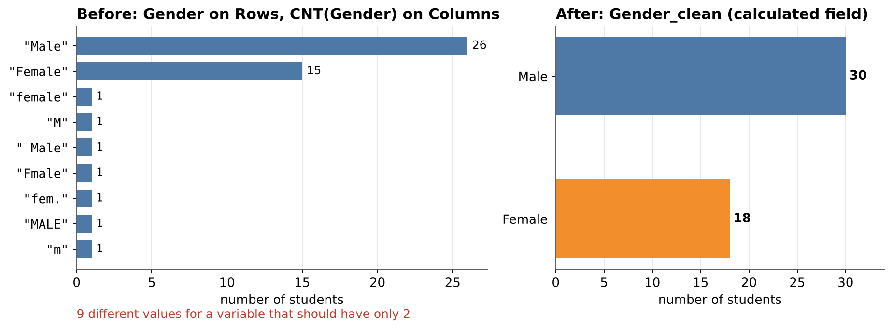
Use the left chart above.
The variable Gender should have classes, but Tableau finds . The value " Male" differs from "Male" only by a leading , and "MALE" differs only by . These are called errors.
Every different string is a separate class, exactly like the lecture’s m, Male, fem., FemalE, Femle example. Leading or trailing spaces and capitalization are syntax errors; Tableau’s guide calls such mistakes structural errors.
Step 1: Remove duplicate or irrelevant observations
Tableau steps
- Drag
Student ID(now a string dimension) to Rows andResponse Noto Text, set it to Measure › Count, and sort descending. Two students appear twice: 733519 (responses 7 and 31) and 368717 (responses 26 and 50). - Quick check: drag
Student IDonto a new sheet’s Text, choose Measure › Count and then Count (Distinct): CNT = 50 rows, CNTD = 48 students. - Remove the second copy: drag
Response Noto Filters (as a dimension), untick 31 and 50. - Irrelevant column:
Shoe Sizehas nothing to do with CGPA or spending. Right-click it in the Data pane › Hide.
After removing the duplicates the data have rows. Hiding Shoe Size removes irrelevant data column-wise; keeping only Engineering students for an Engineering report would remove irrelevant data .
50 − 2 = 48 responses, one per student. The lecture’s examples: shoe size is not needed when analysing CGPA (column-wise); studying only surgery patients means not including everyone (row-wise). Drop a column only if you are sure it is unimportant, and ask a domain expert when unsure.
Step 2: Fix structural errors
Tableau steps
Gender: right-click in the Data pane › Create › Calculated Field…, name it
Gender_clean:IF LEFT(UPPER(TRIM([Gender])), 1) = "F" THEN "Female" ELSEIF LEFT(UPPER(TRIM([Gender])), 1) = "M" THEN "Male" ENDTRIMremoves the spaces,UPPERstandardizes the case, and the first letter decides the class.Faculty: create
Faculty_upper=UPPER(TRIM([Faculty])). This merges “Economics”, “Economics␣” (with a trailing space) and “ECONOMICS”. Then right-clickFaculty_upper› Create › Group…: select ENGINEERING and ENG. › Group, name it Engineering; group ARTS & SCIENCES with ARTS AND SCIENCES.Student ID: pad the IDs back to 6 digits:
ID_6=RIGHT("000000" + STR([Student ID]), 6). (If you already changed the type to String, use[Student ID]instead ofSTR([Student ID]).)Height (uniformity):
Height_cm=IF [Height] < 3 THEN [Height] * 100 ELSE [Height] END.
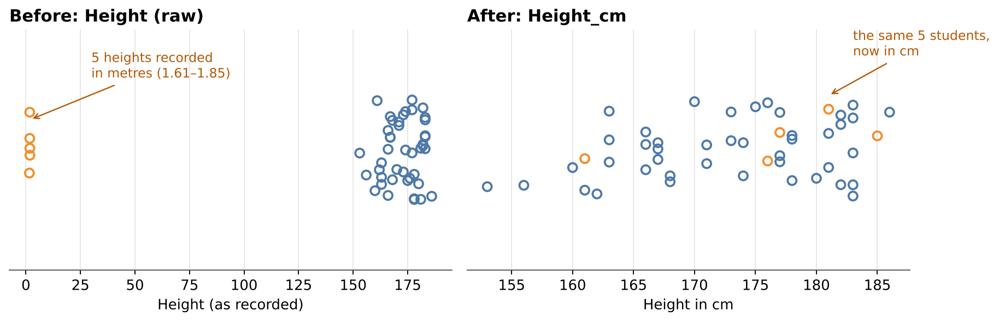
Before cleaning, the average height is 154.9; after Height_cm it is 173.1. The 5 values recorded in metres pulled the mean down by about cm. RIGHT("000000" + STR(4021), 6) returns . After UPPER(TRIM([Faculty])) the 8 raw faculty values shrink to , and after grouping to .
- 173.1 − 154.9 = 18.2 cm: a few unit errors can move the mean a lot, and the chart still “looks” fine.
- “000000” + “4021” = “0000004021”; the right-most 6 characters are 004021.
- Raw faculty values: Engineering, engineering, Eng., Arts & Sciences, Arts and Sciences, Economics, “Economics”, ECONOMICS (8). After TRIM + UPPER: ENGINEERING, ENG., ARTS & SCIENCES, ARTS AND SCIENCES, ECONOMICS (5). Grouping fixes the last two typos: 3.
Step 3: Filter unwanted outliers
Tableau steps
- Range constraints: drag
Ageto Filters › All values › Range of values from 18 to 100. One response (age 150) leaves. Do the same forCGPA(0 to 4): one response (4.6) leaves. - Cross-field check: create
Years_ok=[Expected Grad Year] >= [Enroll Year]and drop it on Color of a text table of students: one response is False (enrolled 2023, graduating 2022). Fix it at the source or exclude it. - True outliers: a box plot of
Monthly Spendingshows one student at ₺48,000. That is not impossible, so we keep it and note it. Removing it just because it is far away would hide real information.
After the range filter on Age, the average age of the 48 students drops from 25.06 to 22.40. What is the best way to describe the age 150?
- A true outlier: a valid but extreme age that must be kept
- An invalid value that breaks a range constraint; probably a typing mistake
- A missing value, so it should be imputed with the mean
- A uniformity problem, because it is measured in months
Nobody at university is 150, so the value is invalid, not just extreme. A single invalid value moved the mean by more than 2.5 years. The ₺48,000 spending is different: unusual, but possible, so it is kept and investigated.
Step 4: Handle missing data
Tableau steps
- Drag
Monthly Spendingto Columns, aggregation off. A small “4 nulls” indicator appears at the bottom right of the view. Click it to filter them out or show them at the default position. AVG(Monthly Spending)already ignores the 4 nulls: it averages the 44 known values.- To impute with the mean (one of the lecture’s methods):
Spending_imp=IFNULL([Monthly Spending], {AVG([Monthly Spending])}).
A student handles the 4 missing spending values. One line is wrong. Click it.
- Of the 48 students, 44 reported their monthly spending and 4 did not.
- Before deciding, I ask why the values are missing: did very high or very low spenders skip the question?
- AVG(Monthly Spending) in Tableau gives ₺9,670, the mean of the 44 known values.
- To keep all 48 students, I replace the nulls with ZN([Monthly Spending]); the mean becomes ₺8,865, which is more accurate because it uses everyone.
- Dropping the 4 students is acceptable here, but with a small data set it loses information.
Line 4 is wrong. ZN() turns a null into zero, as if those 4 students spent nothing. That is a made-up value, and it pulls the mean down to 425,500 / 48 = ₺8,865. Mean imputation, IFNULL([Monthly Spending], {AVG([Monthly Spending])}), keeps the mean at ₺9,670 (but makes the spread look a little smaller).
A survey on income has many missing answers, mostly from very rich people. Why is it important to know this before handling the missing data?
- Because Tableau cannot draw charts with nulls
- Because the missing values must then be replaced with 0
- Because dropping or mean-imputing would make the average income look lower than it really is
- Because missing data only matters in data sets with more than 1,000 rows
The lecture asks: “Is the income variable missing for very rich people?” If yes, the missingness is not random: the known values are mostly lower incomes, so both dropping and mean imputation bias the average downward. Understanding the reason for missingness comes first.
Step 5: Scale, transform and validate
Tableau steps
- Scaling:
CGPA_pct=[CGPA] / 4 * 100turns CGPA (0–4) into a percentage (0–100). - Transformation:
Log_Spending=LOG([Monthly Spending])pulls in the long right tail caused by the ₺48,000 student, so the histogram is easier to read. - Validate: rebuild the Gender, Height and Age charts with the clean fields. Two genders, three faculties, all heights in 153–186 cm, all ages 18–27, and CNT = CNTD = 46 after the filters.
A student’s CGPA is 3.2. On the 0–100 scale, CGPA_pct = . An SAT score of 1000 on the 400–1600 scale, rescaled to 0–1 with (score − 400) / (1600 − 400), is , so it can be compared with an ACT score rescaled the same way.
3.2 / 4 × 100 = 80. (1000 − 400) / 1200 = 0.5. SAT (400–1600) and ACT (1–36) are on different scales, so they can only be compared after rescaling, as in the lecture.
Write a short cleaning report (the last stage of the workflow) for r7_survey_dirty.csv: list the problems you found and what you did with each.
Model answer:
- Duplicates: 50 rows but 48 distinct IDs. Responses 31 and 50 were second submissions; removed.
- Irrelevant data: Shoe Size hidden.
- Structural errors: 9 Gender values and 8 Faculty values. Cleaned with TRIM, UPPER and a group, leaving 2 genders and 3 faculties. Student IDs padded to 6 digits.
- Uniformity: 5 heights in metres converted to cm (mean 154.9 → 173.1).
- Validity: age 150 and CGPA 4.6 removed by range filters; one graduation year before the enrolment year flagged.
- Outlier kept: ₺48,000 spending is plausible; kept and noted.
- Missing data: 4 spending values missing; mean of the 44 known values is ₺9,670. Not replaced with 0.
- Verification: all charts rebuilt with the clean fields; 46 students remain.
Part B — Making your visualizations better
You build a dashboard with four views in Tableau. Which choices follow the lecture’s grid and alignment advice? Select all that apply.
- Put the most important view in the top left corner
- Place the title at the top left
- Draw a thick border around every view so the grid is clearly visible
- Put the least important information (e.g. data source note) at the bottom right
- Arrange the views in a circle so the eye can start anywhere
Readers of left-to-right languages start at the top left and finish at the bottom right. The grid should be invisible: borders around every element give a “boxy” design and add non-data ink.
Match each of Tufte’s ideas with what it means for your Tableau chart.
- Data-ink ratio :: Remove borders, heavy gridlines and decoration that show no data
- Data-dense graphs :: Show a lot of information in a simple chart
- Strategic use of colour :: Colour only what matters, not everything for decoration
- Importance of context :: Add a title and notes that say what the data mean and why they matter
These four ideas are the backbone of the decluttering steps in B6.
A chart shows the monthly mean temperature (colour) of four cities, with month on the x-axis and city on the y-axis. Which statement is correct?
- Both position scales are continuous, so the months should be spaced by their number of days
- The city axis must be in alphabetical order, because it is an ordered factor
- Both position scales are discrete: months must keep their natural order, but the cities can be placed in any order
- Temperature can’t be shown as colour, only on a position scale
Month is an ordered factor with 12 levels and city an unordered factor with 4 levels, so both axes are discrete with equal spacing. The months need their natural order; the order of the cities is our choice (for example sorted by temperature). Mapping the key variable to colour is allowed, but then the coloured areas must be large enough to read.
In a correct one-to-one mapping, each data value corresponds to exactly one aesthetic value (for example one colour), and each colour corresponds to exactly one data value.
That is the definition of a one-to-one scale. Reusing a colour for two categories (“colour looping”) breaks it, which is why qualitative palettes should not repeat colours.
B1. Colour
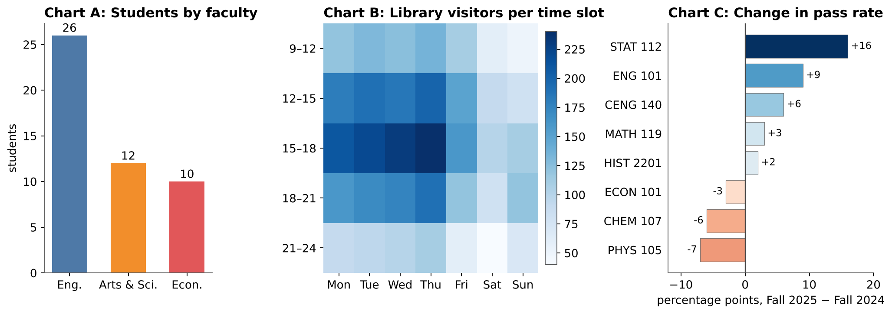
Which palette type does each chart above use, and which would you use for the other situations?
- Chart A: students by faculty :: Qualitative
- Chart B: library visitors by day and time :: Sequential
- Chart C: change in pass rate (+ and −) :: Diverging
- Ways of coming to campus: bus, ring, walk, car :: Qualitative
- Satisfaction levels from “very low” to “very high” :: Sequential
- Percentage of female students per department, centred on 50% :: Diverging
- Categorical variable → qualitative (distinct colours, at most about 10).
- Ordinal or numerical without a meaningful centre → sequential (light = low, dark = high).
- Numerical with a meaningful midpoint (0 change, or 50% as in the lecture’s Texas map) → diverging.
For each data set, choose the palette type. The chart recolours immediately, so you can see why the right choice reads better.
Colour in Tableau
- Change a palette: click Color on the Marks card › Edit Colors…. For a dimension pick a categorical palette such as Tableau 10; for a measure pick a sequential palette (Blue) or a diverging one (Orange-Blue Diverging).
- Centre a diverging palette: in Edit Colors tick Advanced › Center: and type the midpoint (0 or 50).
- Colour-blind friendly: choose the built-in Color Blind palette (blue and orange tones).
- Highlight one thing: create
Highlight=IF [Course] = "STAT 112" THEN "STAT 112" ELSE "Other" END, drop it on Color, and set Other to light grey and STAT 112 to a strong colour.
Which pieces of colour advice come from the lecture? Select all that apply.
- Use 10 or fewer colours in a qualitative palette; bundle the rest into “Other”
- Use a different bright colour for every bar so the chart looks lively
- Keep the baseline colours subtle so they don’t compete with the highlight colour
- Avoid red–green combinations; blue–orange is the safest pair
- Re-use the same colour for two categories when you run out of colours
- Colours are easier to tell apart on large areas than on small points or thin lines
- b is the opposite of “use colour purposefully, not just for decoration”.
- e is colour looping, which leads to misinterpretation.
- f: small marks and thin lines make colours hard to distinguish, and colour-vision deficiency makes it worse.
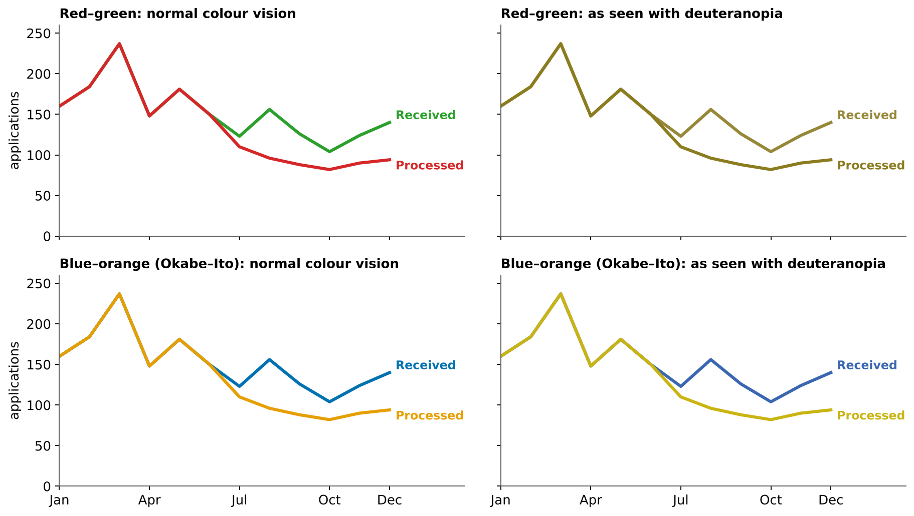
In the simulation above, the red and green lines turn into almost the same colour, while the blue and lines stay different. Besides colour, we can help colour-blind readers with patterns, shapes or text , for example labelling each line directly.
Deuteranopia (no green-sensitive cones) is the most common form of colour-vision deficiency, especially among males. Blue–orange (Okabe & Ito) survives it; red–green does not. Direct labels make the colour itself unnecessary.
B2. Text, tables and heatmaps
The student council wants to share one fact: “In 2026, 38% of students used the ring bus, compared to 61% in 2016.” What is the best visual?
- A clustered bar chart of the two percentages
- A pie chart for each year
- A line chart with two points
- Simple text: the two numbers in large font with a short sentence
Simple text. “The fact that you have some numbers does not mean that you need a graph!” With one or two numbers, use the numbers directly. In Tableau: put the value on Text and make the font large (a “big number”).
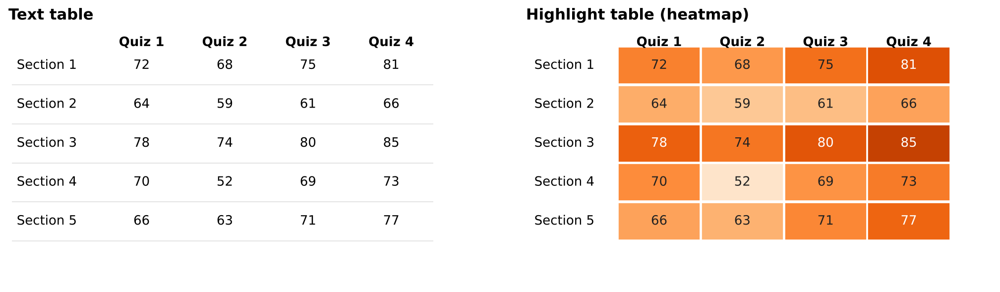
Use the highlight table. The highest average is in Section , Quiz . The cell that stands out as unusually low is Section , Quiz 2 with a score of .
Colour saturation helps the eye target the points of interest quickly: the dark cell (85) and the pale cell (52) jump out in the heatmap, while in the text table you must read every number. Always add a legend to explain the colour scale.
In Tableau: Section on Rows, Quiz on Columns, AVG(Score) on Text, then Show Me › highlight table (or set the mark type to Square and drop AVG(Score) on Color).
B3. What to avoid
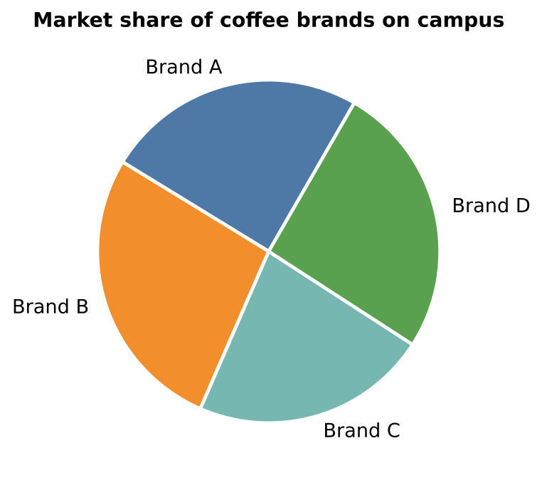
Look at the pie chart above for a few seconds. Which brand has the largest market share?
- Brand A
- Brand B
- Brand D
- They are all exactly equal
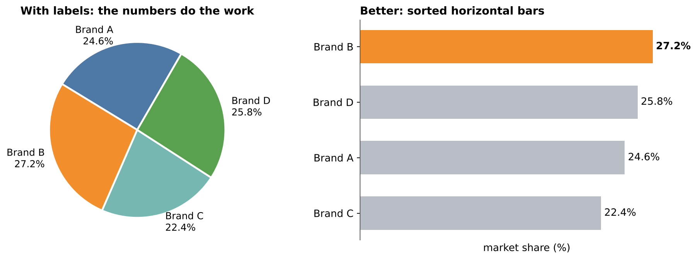
Brand B (27.2%), but very few people can tell from the slices alone, because the human eye is poor at comparing angles and areas. Labels fix it, but then the numbers do all the work and the pie isn’t worth its space. A sorted horizontal bar chart shows the ranking instantly. (In Recitation 6 we built a donut chart in Tableau as practice; Lecture 7 explains why donuts are even harder to read: comparing arc lengths.)
Match each thing to avoid with the lecture’s better alternative.
- Pie chart :: A sorted horizontal bar chart
- Donut chart :: A bar chart; arc lengths are hard to compare
- 3D chart :: The same chart in 2D, unless a third dimension is really plotted
- Secondary y-axis :: Label the second series directly, or pull the charts apart with a shared x-axis
- Bar chart with the y-axis starting at 60 :: The same bar chart with a zero baseline
- Long category names on a vertical bar chart :: A horizontal bar chart
In Tableau: avoid Dual Axis for two different units. If you must, use two separate rows with the same x-axis instead. For a zero baseline: right-click the axis › Edit Axis… › tick Include zero.
For bar charts, the bars should be narrower than the white space between them, so that the chart looks light.
False. In general the bars should be wider than the gaps between them, but not so wide that readers compare areas instead of lengths. In Tableau, drag the Size slider on the Marks card.
B4. Decluttering, step by step
Your student-affairs office lost two staff members in June. You want a chart that supports hiring new staff, using r7_applications.csv. Turn on the steps one by one and watch the chart change.
The same steps in Tableau
Monthto Columns (as an exact date, continuous),Measure Valuesto Rows,Measure Namesto Color; keep only Received and Processed.- Remove the border: Format › Borders › Sheet › Row and Column Divider: None.
- Remove gridlines: right-click the view › Format… › Lines icon › Grid Lines: None (or a thin light grey).
- Remove data markers: click Color › Markers: choose the option without markers.
- Clean up the axes: right-click the date axis › Format › Dates: custom
mmm(Jan, Feb, …); right-click the value axis › Format › Numbers: Number (Custom) with 0 decimals. - Label the data directly: Label › Show mark labels › Marks to Label: Line Ends, and tick Label end of line only for the name; then hide the legend.
- Consistent colour: Label › Font › Match Mark Color. Make Received grey and Processed a strong blue, and write a title that states the message.
Part C — Two useful charts in Tableau
C1. Treemap
A treemap shows a part-to-whole relationship with nested rectangles: the area of each rectangle is proportional to its value, and groups (parents) contain their subgroups (children). It works well when there are many categories, the data are hierarchical, and precise comparisons are not important.
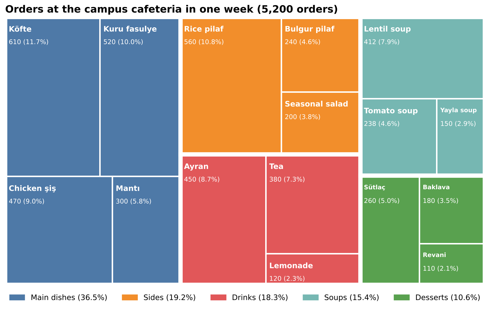
Tableau steps
- Connect to r7_cafeteria.csv. Ctrl/Cmd-click
Category,ItemandOrdersin the Data pane, open Show Me and click Treemap. - Tableau puts
SUM(Orders)on Size and Color. DragCategoryonto Color instead, so each category gets one colour and its items are grouped together. - Drag
ItemandSUM(Orders)onto Label. AddOrdersonce more to Label and choose Quick Table Calculation › Percent of Total. - Give it a title that says what to look at, for example “Main dishes make up over a third of all orders”.
Read the treemap. Main dishes account for % of all orders. The single most ordered item is . Within Soups, lentil soup makes up about % of the soup orders (412 of 800).
Main dishes: 1,900 / 5,200 = 36.5%. Köfte has the largest rectangle (610). Lentil: 412 / 800 = 51.5%: more than half of the soups. Note how the hierarchy lets us tell a story at two levels (category, then item).
A treemap is the best chart when we need to tell whether Tea (380) or Lentil soup (412) was ordered more often.
False. Treemaps are for part-to-whole views of many hierarchical categories, when precise comparisons are not important. Comparing two rectangles of different shapes is hard; a sorted bar chart answers this question better.
C2. Slope chart
A slope chart is a line chart that keeps only two points in time. Each category is one line, so it shows the change in value, the change in ranking, and who grew or fell the most: ideal for “before and after” stories.
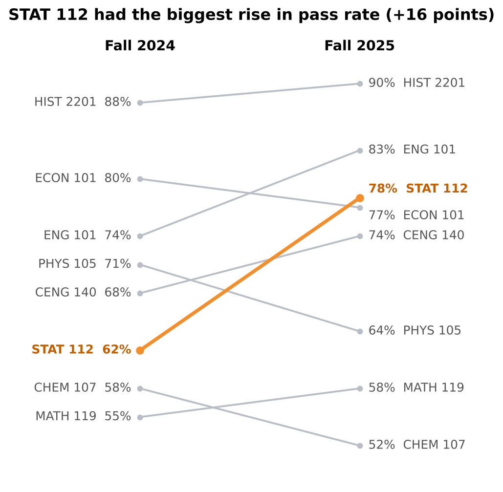
Tableau steps
- Connect to r7_pass_rates.csv. Drag
Termto Columns andPass Rateto Rows. - Drag
Courseonto Detail: one line per course. Set the mark type to Line. - Drag
CourseandPass Rateonto Label. In Label choose Line Ends, and untick Allow labels to overlap other marks. - Contrast: create
Highlight=IF [Course] = "STAT 112" THEN "STAT 112" ELSE "Other" END, put it on Color, make Other light grey and STAT 112 orange. - Hide the vertical axis (right-click › untick Show Header) and remove the gridlines, as in B8.
STAT 112 rose by percentage points and moved from rank to rank among the 8 courses. The largest fall was in ( points).
78 − 62 = 16. Ranks in Fall 2024: HIST 88, ECON 80, ENG 74, PHYS 71, CENG 68, STAT 62 (6th), CHEM 58, MATH 55. In Fall 2025: HIST 90, ENG 83, STAT 78 (3rd), ECON 77, … PHYS 105 fell from 71 to 64 (−7).
Part D — Make it better challenge
The chart below was made with a data visualization tool. The message it should send: “Ankara’s rent is above the average of the 10 cities.”
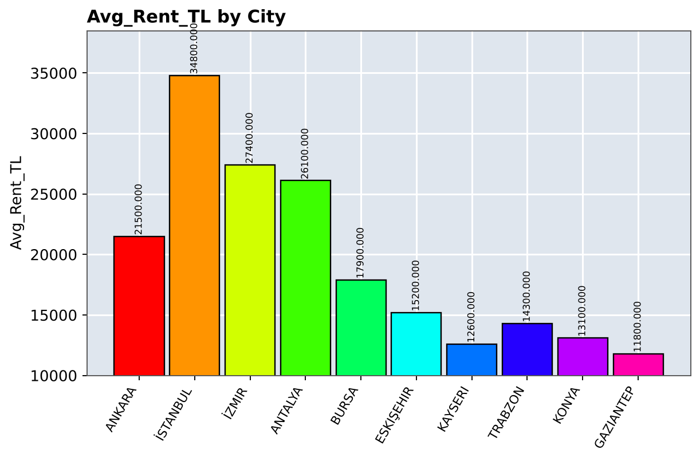
List at least five problems in this chart, name the principle behind each, and say how you would fix it in Tableau.
Model answer:
| Problem | Principle | Fix in Tableau |
|---|---|---|
| y-axis starts at 10,000 | Bars need a zero baseline (bad figure) | Edit Axis › Include zero |
| Bars in random order | Easy comparison, simplicity | Sort descending |
| Rotated, capitalized city names | Don’t make readers turn their heads | Swap to horizontal bars; keep normal case |
| Ten rainbow colours | Colour purposefully; contrast | Highlight calc: Ankara orange, others grey |
| Labels with 3 decimals, rotated | No unnecessary precision | Format › Numbers › Currency (Custom): ₺ prefix, Thousands (K), 1 decimal |
| No reference to the average | Context | Analytics pane › Average Line |
| Title “Avg_Rent_TL by City” | Explanatory charts state the message | Title: “Ankara’s average rent is 10% above the 10-city average” |
| Grey background, gridlines, outlines | Data-ink ratio, clutter | Format › Shading: None; Lines: None; Borders: None |
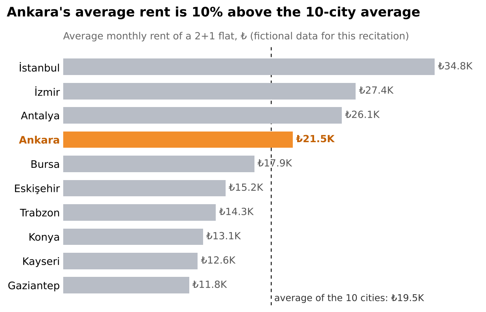
Tableau steps for the makeover
- Connect to r7_rent.csv.
Cityto Rows,Avg Rent TLto Columns: horizontal bars with a zero baseline by default. Sort descending. - Create
Highlight=IF [City] = "Ankara" THEN "Ankara" ELSE "Other" END› Color; Edit Colors: Ankara orange, Other light grey. - Analytics pane › drag Average Line onto the view (Table). Edit it: label “average of the 10 cities”, dashed, dark grey.
Avg Rent TLonto Label; right-click a label › Format… › Numbers › Currency (Custom): prefix ₺, Display Units Thousands (K), 1 decimal.- Right-click the bottom axis › untick Show Header (the labels carry the numbers). Right-click the City field label › Hide Field Labels for Rows.
- Format › Shading: None; Lines: Grid Lines None; Borders: None.
- Double-click the title: “Ankara’s average rent is 10% above the 10-city average” (bold), with the data note in small grey text below.
Check the title: the 10-city average is ₺ and Ankara’s rent is ₺21,500, so Ankara is about % above the average. In the ranking, Ankara is in place.
Average = 194,700 / 10 = ₺19,470. (21,500 − 19,470) / 19,470 ≈ 10.4%. Ankara is 4th after İstanbul, İzmir and Antalya. Always check that a message title is supported by the numbers.
Part E — Flourish
Flourish is a browser-based, drag-and-drop tool for tidy tables, built for storytelling with data. In this part you first read and criticise a chart made in Flourish, then build your own charts for four new research questions. All data sets are clean and fictional, created for this recitation.
Anything published from a free account can be seen by anyone with the link, so use only non-sensitive data.
E1. The workflow for every chart
- Log in at app.flourish.studio › New visualization › choose a template. Look at its sample data first.
- Switch Preview / Data to Data › Upload data › choose the CSV (Flourish also reads Excel, TSV, JSON and GeoJSON). Flourish reads the first row as headings.
- On the right, assign the columns (e.g. Labels/time, Values). These change from template to template.
- Switch back to Preview and improve the chart in the settings panel: Colours, Labels, Legend, Controls & filters, Header (title, subtitle) and Footer (source).
- Export & publish › Publish to share and embed.
E2. Read it, then beat it: a radar chart
Data: r7f_social_media.csv, the share of students (%) who use each of 12 apps daily, 2014–2025, with each app’s Type (Social network, Photo & video, News & text, Messaging, Career).
Research question: How did students’ daily use of social media apps change between 2014 and 2025?
I answered this research question in Flourish with a radar chart: one polygon per app, one spoke per year, and one small chart per app type (the Separate view).
Five radar charts made in Flourish, one per app type, with spokes for the years 2014 to 2023 and rings at 0, 20, 40, 60 and 80 percent. Social network: one polygon that is large at 2014 to 2017 and shrinks to about 20 by 2023. Photo and video: six overlapping blue polygons that cannot be told apart. News and text: one fairly round polygon between about 40 and 58. Messaging: one very large polygon near 90 in every year and two small ones. Career: one small polygon that grows towards 2022 and 2023.”
Explore the interactive version below:
Interpret the chart
In the Social network panel (Facebook only), the polygon is large on the 2014–2017 spokes and small on the 2021–2023 spokes. What does that mean?
- Facebook use was low at first and grew over time
- Facebook use stayed about the same
- Facebook use was high at first and fell steadily
- Facebook was used more in winter than in summer
On a radar chart the distance from the centre is the value. Facebook is near 80–90% on the early spokes and near 20% on the late ones: daily use fell steadily (from 88% in 2014 to 21% in 2023). The last option is a trap: the spokes are years, not seasons, even though the circle makes time look like a cycle.
In the Messaging panel, the large polygon close to the outer ring tells us that every messaging app was used by about 90% of students.
False. Only one app (WhatsApp, 70% → 97%) draws the large polygon. The two small polygons are Telegram and Discord, which stay below 50%. Without app labels the reader can’t tell which polygon belongs to which app, which is one of the chart’s main problems.
Which problems does this radar chart have? Select all that apply.
- In Photo & video, six overlapping polygons can’t be told apart, and the apps aren’t labelled
- The spokes only go up to 2023, so 2024 and 2025 are missing even though the research question asks about 2014–2025
- Time is drawn as a circle, so 2023 is joined back to 2014 as if the years formed a cycle
- Each panel uses the same scale (0–80), so values can’t be compared
- The area of a polygon grows much faster than the values, so changes look bigger than they are
- Overlap and missing labels: the eye can’t follow six lines on a web.
- Missing years: the Values setting probably included only the 2014–2023 columns. Always check the column settings in the Data tab!
- Circular time: the closing line from 2023 back to 2014 means nothing.
- Area exaggerates: a polygon’s area grows roughly with the square of the values.
- The same scale in every panel is not a problem; it is what makes the panels comparable.
Suggest better charts
Discussion I answered the research question with a radar chart. Which other charts would answer it better for these variables (App, Type, one value per year)? Say why, and how you would build each in Flourish.
Model answer:
| Better chart | Why it is better | In Flourish |
|---|---|---|
| Line chart (years on the x-axis), with 2–3 apps highlighted and the rest grey | Time stays a straight, ordered axis; trends and crossings (WhatsApp passing Facebook in 2016) are easy to see | Line, bar and pie charts › Line chart. Flourish wants each line as a column, so first transpose the table (Year as rows, apps as columns). Then colour overrides, line labels, no legend. |
| Small multiples of line charts (one panel per app or type) | No overlap at all; every app is readable | Same template, with Type in Charts grid |
| Bar chart race | The question is about changing rankings; the race shows who passes whom | Bar chart race: Label = App, Values = 2014…2025, Category = Type |
| Slope chart of 2014 vs 2025 | Compares start and end for all 12 apps at once | Slope chart template, or a line chart with only the two years |
Common to all of them: include all years (2014–2025), label the apps directly, and write a message title such as “Facebook fell from 1st to 11th while TikTok rose from 0% to 77%”.
E3. Your turn: four research questions
Answer each research question with one Flourish visualization. For each one:
- Choose the template.
- Assign the columns.
- Improve the chart: colours, labels, title, source.
- Write two or three sentences that answer the question.
Open the model answer only after you have tried.
RQ 1 · r7f_semester_life.csv. How do sleep and coffee consumption change during exam weeks?
Chart: Line, bar and pie charts › Line chart.
- Columns: Labels/time = Week; Values = Sleep and Coffee only. Four measures with different units on one axis would mislead. To show all four, use Charts grid instead.
- Improve: line labels, annotations or axis highlights at week 8 (Midterms) and weeks 15–16 (Finals), y-axis titles with units.
Answer: sleep falls from 7.6 hours (week 1) to 5.6 in midterm week and 5.1 in the last week of finals, while coffee rises from 1.4 to 4.1 cups a day. The two move in opposite directions and react sharply at exam times. This is an association, not proof that coffee causes less sleep.
RQ 2 · r7f_satisfaction.csv. Which campus services are students most and least satisfied with, and what changed from 2024 to 2025?
Chart: Line, bar and pie charts › Bar chart (stacked %), also called a Likert chart.
- Columns: Labels/time = Service; Values = the 5 levels in order; Row filter = Year, shown as buttons.
- Improve: diverging colours (dark red → grey → dark blue) with custom overrides; the rows are already sorted by 2025 satisfaction; data point labels with %.
Answer: - Most satisfied: Library (75% satisfied or very satisfied), Sports centre (67%). - Least satisfied: Wi-Fi (27%), the ring buses (32%) and the cafeteria (33%). - Biggest changes: Wi-Fi fell from 44% to 27% satisfied, while student affairs rose from 32% to 44%.
RQ 3 · r7f_international_students.csv. Which countries and regions do the university’s international students come from?
Chart: Projection map with points.
- Columns: Latitude/Longitude = the coordinates; Name = Country; Size = Students; Color = Region.
- Improve: a size legend, labels for the largest countries only, and a sorted bar chart of the top 15 next to the map for exact comparisons.
Answer: - Asia sends 77.7% of the 2,458 students (1,910). - The top three countries are Azerbaijan (412), Turkmenistan (265) and Pakistan (198), together 35.6%. - Africa (263) and Europe (253) each send about 10%; the Americas only 32.
RQ 4 · r7f_student_journeys.csv. How do students flow from their high-school track to their faculty and their first destination after graduation?
Chart: Sankey.
- Columns: Source, Target, Value = Students.
- Improve: colour the links by their source, keep the stages in order (tracks → faculties → destinations), show values on the nodes.
Answer: - 590 of the 1,000 students come from the science track, which feeds mainly engineering (310 students in total). - The largest first destination is technology & software (235): 150 from engineering, 55 from arts & sciences, 30 from economics. - Finance & consulting is second (180), and 165 students go on to graduate school.
All data sets and charts on this page were created for this recitation.